הפעלה והתחברות למערכתStart and connect
- הדלק את המערכת וחכה שלד החיווי יהבהב בירוק (יש לוויינים).
- פתח את ExoTerra ואשר את ההרשאות: בלוטות׳, התראות ומיקום.
- האפליקציה מוצאת את המערכת ומתחברת לבד. אם יש כמה מערכות בסביבה, הקש על שלך ברשימה (HammerBox-XXXX).
- בלשונית מערכת מופיע מחובר והמערכת מצפצפת.
- Turn on the box and wait for the LED to blink green (satellites in view).
- Open ExoTerra and allow the permissions: Bluetooth, notifications and location.
- The app finds the box and connects by itself. With several boxes nearby, tap yours in the list (HammerBox-XXXX).
- The System tab shows Connected and the box beeps.
לא מתחבר?Not connecting?
• הבלוטות׳ כבוי: האפליקציה תבקש להדליק אותו.
• המערכת מקבלת טלפון אחד בכל פעם. נתק קודם את הטלפון השני.
• התקרב למערכת והקש סרוק שוב.
• האפליקציה ממשיכה לעבוד ברקע (יש לה התראה קבועה). עצור בהתראה סוגר אותה.
• איתור (צפצוף) גורם למערכת לצפצף, כדי לזהות איזו מערכת מחוברת.
• Bluetooth is off: the app asks you to turn it on.
• The box accepts one phone at a time. Disconnect the other phone first.
• Move closer to the box and tap Scan again.
• The app keeps running in the background (it has a permanent notification). Stop in that notification closes it.
• Locate (beep) makes the box beep, to tell which box is connected.
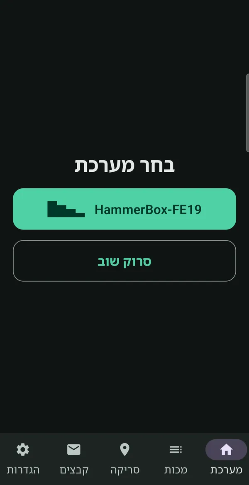
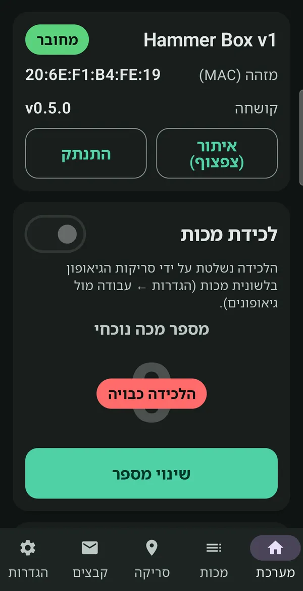
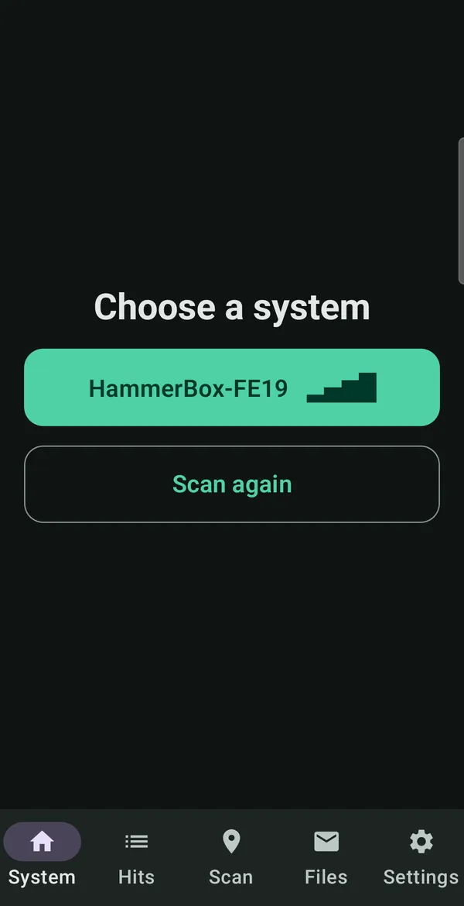
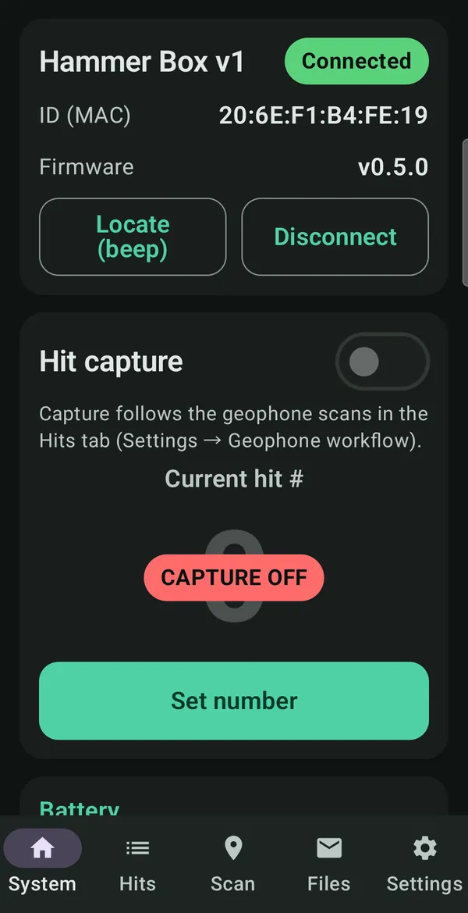
בדיקת קליטה ו-RTKCheck GNSS and RTK
גלול למטה בלשונית מערכת לכרטיס GNSS. עובדים ב-RTK Fixed: המיקום מדויק לכ-2 ס״מ.
Scroll down the System tab to the GNSS card. Work at RTK Fixed: positions are then accurate to about 2 cm.
| מצבState | דיוקAccuracy | מה לעשותWhat to do |
|---|---|---|
| אין קליטהNo fix | — | צא לשטח פתוח, חכה כמה דקות.Move to open sky and wait a few minutes. |
| קליטה 2D / 3D2D / 3D fix | ~ 1–5 m | ממתין לתיקוני RTK. בדוק ש-NTRIP מחובר.Waiting for RTK corrections. Check that NTRIP is connected. |
| RTK Float | ~ 10–50 cm | התיקונים מגיעים. חכה ל-Fixed.Corrections are arriving. Wait for Fixed. |
| RTK Fixed | ~ 1–2 cm | מוכן לעבודה. לד החיווי במערכת ירוק קבוע.Ready to work. The box LED is steady green. |
תיקוני RTK (NTRIP)RTK corrections (NTRIP)
התיקונים מגיעים מהאינטרנט דרך הטלפון. בהגדרות ← NTRIP: הפעל השתמש בתיקוני NTRIP ומלא שרת, פורט, נקודת עיגון, משתמש וסיסמה מספק ה-RTK.
כשזה עובד, בכרטיס GNSS מופיע: NTRIP מחובר · B/s, תיקונים דרך: טלפון (בלוטות׳), וגיל התיקונים של כמה שניות.
Corrections come from the internet through the phone. In Settings → NTRIP: turn on Use NTRIP corrections and fill the caster, port, mountpoint, user and password from your RTK provider.
When it works, the GNSS card shows NTRIP Connected · B/s, Corrections via: Phone (Bluetooth), and a correction age of a few seconds.
הכרטיס "GNSS של הטלפון"The "Phone GNSS" card
גם מיקום ה-GPS של הטלפון נשמר ליד כל מכה וכל נקודה, להשוואה בלבד (דיוק של מטרים). צריך הרשאת מיקום מדויק.
The phone's own GPS position is saved next to each hit and point, for comparison only (metre accuracy). It needs the precise-location permission.
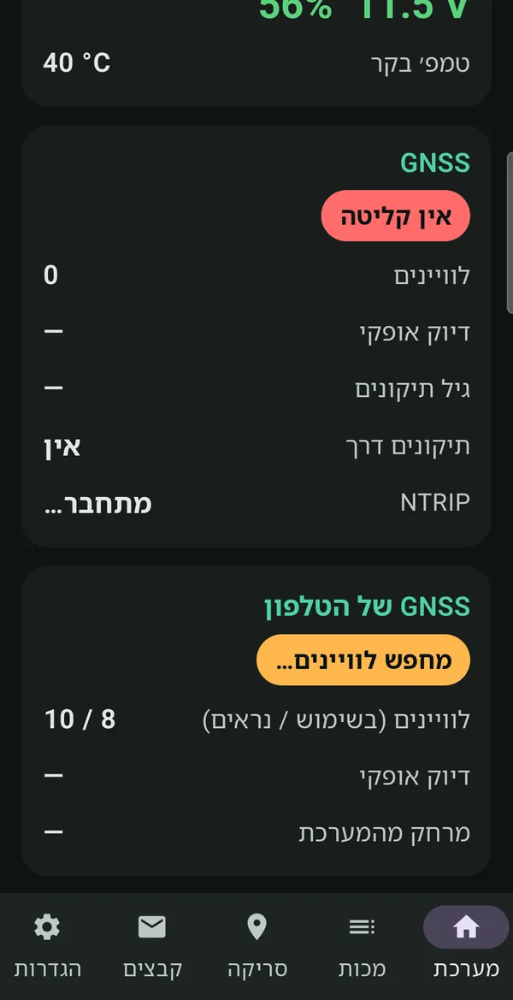
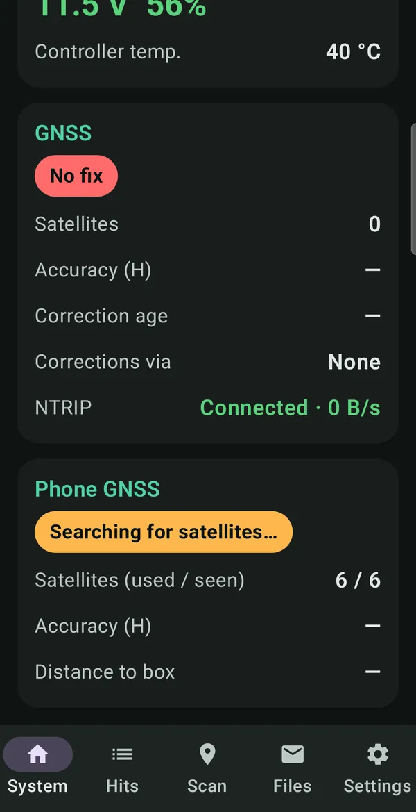
מדידת שורת הגיאופונים (לא חובה)Measure the geophone line (optional)
מעבר ראשון לאורך השורה, ששומר את המיקום של כל גיאופון.
A first walk along the line that saves each geophone's position.
- פתח את הלשונית סריקה והעמד את המערכת (האנטנה) ליד הגיאופון.
- כוון את המצלמה ל-QR או לברקוד של הגיאופון. המצלמה נפתחת עם זום; אפשר לשנות בצביטה.
- הקש שמור נקודה. עם שמירה אוטומטית כל קוד חדש נשמר לבד, רק ב-RTK Fixed.
- Open the Scan tab and stand the box (antenna) next to the geophone.
- Point the camera at the geophone's QR code or barcode. The camera opens zoomed in; pinch to change it.
- Tap Save point. With Auto-save on, every new code saves by itself, only at RTK Fixed.
עודMore
• סריקה חוזרת של אותו גיאופון מחליפה את הנקודה הקודמת שלו.
• לחיצה ארוכה על נקודה ברשימה מוחקת אותה.
• הקוד שנסרק נעלם מהמסך 5 שניות אחרי שיצא מהמצלמה.
• המצלמה לא קוראת את הקוד? לחיצה ארוכה על השורה שמתחת למצלמה, הקלד את המספר הסידורי והקש שמור נקודה.
• Scanning a geophone again replaces its previous point.
• Long-press a point in the list to delete it.
• The scanned code leaves the screen 5 s after it leaves the camera.
• Camera can't read the code? Long-press the line under the camera, type the serial and tap Save point.
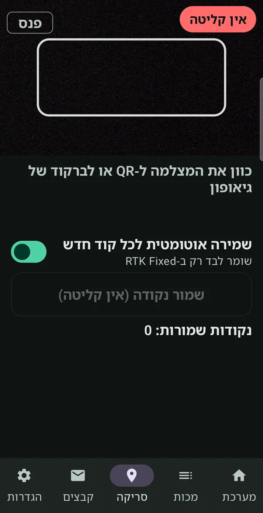
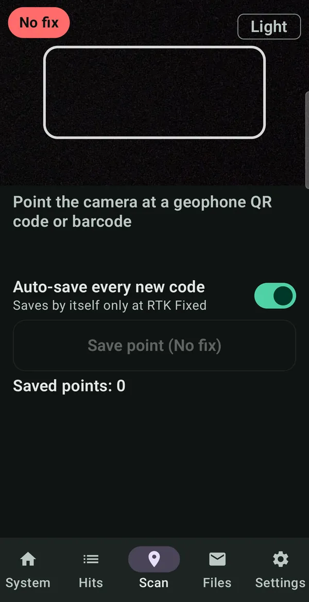
מכות פטיש, גיאופון אחרי גיאופוןHammer hits, geophone by geophone
- הצמד את הפלטה לגיאופון.
- בלשונית מכות, סרוק את ה-QR של הגיאופון. המיקום שלו נמדד מחדש והמערכת מתחילה ללכוד.
- הכה עד שהספירה מגיעה ל-0 (ברירת מחדל: 3 מכות). בכל מכה טובה המערכת מצפצפת ומהבהבת בלבן, והמספר יורד.
- ב-0 נשמע צליל סיום, הלכידה נעצרת והמסך חוזר לסריקה. עבור לגיאופון הבא.
- Put the plate next to the geophone.
- In the Hits tab, scan the geophone's QR code. Its position is measured again and the box starts capturing.
- Hit until the countdown reaches 0 (3 hits by default). On each good hit the box beeps and flashes white, and the number goes down.
- At 0 the phone chimes, capture stops and the screen returns to scanning. Move to the next geophone.
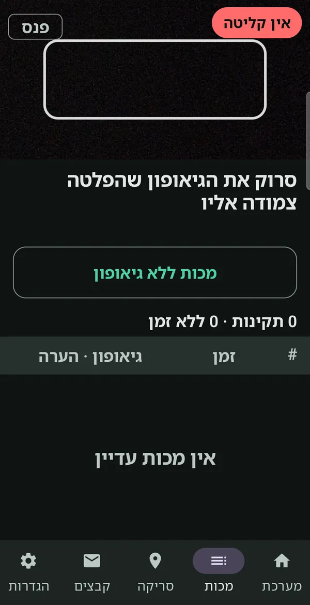
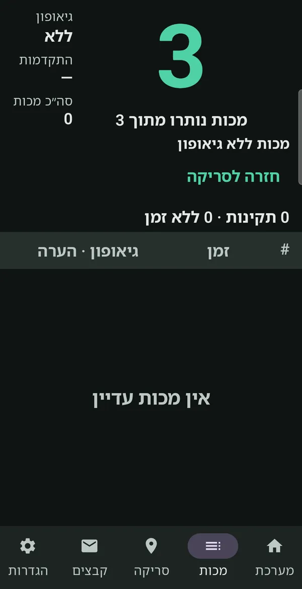
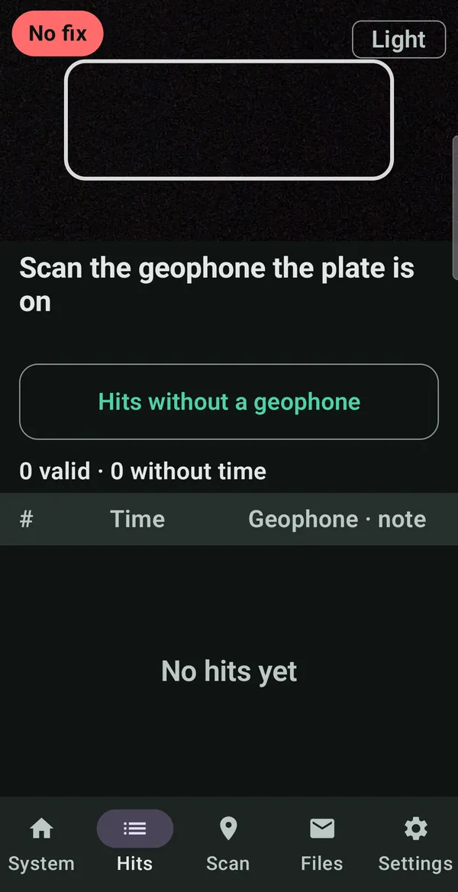
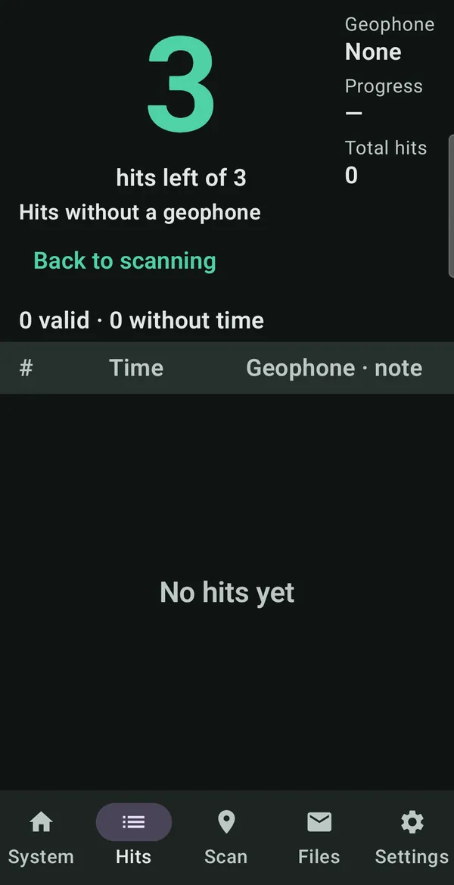
- מכה לא טובה? לחיצה ארוכה עליה ברשימה ← מחק. הספירה עולה בחזרה, והכה שוב. הקשה על מכה מוסיפה הערה.
- המצלמה לא קוראת את הקוד? לחיצה ארוכה על סרוק את הגיאופון…, הקלד את המספר הסידורי ← התחל מכות.
- סרקת גיאופון שגוי? גיאופון שגוי? סריקה מחדש (לפני המכה הראשונה).
- מכות שלא מול גיאופון: מכות ללא גיאופון.
- כל עוד הספירה לא הסתיימה אי אפשר לסרוק את הגיאופון הבא, ואותו גיאופון לא נסרק פעמיים ברצף.
- Bad hit? Long-press it in the list → Delete. The countdown goes back up; hit again. Tap a hit to add a note.
- Camera can't read the code? Long-press Scan the geophone…, type the serial → Start hits.
- Scanned the wrong geophone? Wrong geophone? Scan again (before the first hit).
- Hits away from a geophone: Hits without a geophone.
- The next geophone can't be scanned until the countdown ends, and the same geophone can't be scanned twice in a row.
מה נחשב מכה, ואיך משנים את מספר המכותWhat counts as a hit, and changing the number
• רק מכה עם זמן GNSS תקין נספרת. מכה בלי זמן מופיעה באדום עם "—", ולד החיווי במערכת מהבהב אדום מהר. היא לא נספרת: הכה שוב.
• אין צפצוף ואין הבהוב לבן = המכה לא נלכדה. בדוק שמסך הספירה מוצג ושהמערכת מחוברת.
• הגדרות ← עבודה מול גיאופונים: מכות לכל גיאופון (1–9), זום המצלמה בסריקה, או כיבוי התהליך למכות חופשיות (אז הלכידה נשלטת מלשונית מערכת).
• בקובץ, כל מכה רושמת את הגיאופון ואת מספר התחנה.
• Only a hit with a valid GNSS time counts. A hit without time shows in red with "—", and the box LED blinks red fast. It does not count: hit again.
• No beep and no white flash = the hit was not captured. Check that the countdown screen is showing and the box is connected.
• Settings → Geophone workflow: hits per geophone (1–9), camera zoom when scanning, or turn the workflow off for free hitting (capture is then switched on the System tab).
• In the file, each hit records its geophone and station number.
שליחת הקבצים וסקר חדשSend the files, start a new survey
- לשונית קבצים: כל סקר הוא קובץ אחד. בחר את הקובץ.
- הקש שלח במייל. Gmail נפתח עם הקובץ מצורף; לחץ שלח. שתף… שולח בכל אפליקציה אחרת.
- בפרופיל העבודה: העלאה לענן, הקלד את שם האתר ← העלה. הקובץ עולה ל-S3 של אקסודיגו. בפעם הראשונה צריך להתחבר: הגדרות ← חשבון Exodigo.
- לסקר חדש: סשן חדש. הקובץ הנוכחי נסגר ונפתח קובץ חדש, והמספור מתחיל מ-1.
- Files tab: each survey is one file. Select the file.
- Tap Send by email. Gmail opens with the file attached; press Send. Share… sends it with any other app.
- In the work profile: Upload to cloud, type the site name → Upload. The file goes to Exodigo's S3. The first time, sign in: Settings → Exodigo account.
- For a new survey: New session. The current file closes, a new one opens, and numbering restarts at 1.
מה יש בקובץWhat's in the file
קובץ CSV (נפתח ב-Excel, כולל עברית): שורה לכל מכה עם זמן GNSS עד ננו-שנייה, מיקום המערכת ודיוקו, גיאופון, תחנה והערה; נקודות הגיאופונים ואיך כל מספר סידורי נקרא (QR, ברקוד או הקלדה); מיקום הטלפון להשוואה; וסוללה פעם בדקה.
כל המיקומים נשמרים ב-WGS84. רשתות RTK בישראל עובדות ב-IGD05/12, שרחוקה כ-0.7 מ' מ-WGS84, והאפליקציה ממירה בעצמה.
מכות שנמחקו נשארות בקובץ שבטלפון עם סימון "נמחק", ולא נכללות בעותק שנשלח. הקשה על קובץ ישן ממשיכה אותו; לחיצה ארוכה מוחקת.
A CSV file (opens in Excel, Hebrew included): one line per hit with GNSS time to the nanosecond, the box position and its accuracy, geophone, station and note; the geophone points and how each serial was read (QR, barcode or typed); the phone position for comparison; and the battery once a minute.
All positions are saved in WGS84. Israeli RTK networks use IGD05/12, about 0.7 m away from WGS84, and the app converts it.
Deleted hits stay in the phone's file marked deleted, and are left out of the copy that is sent. Tap an older file to continue it; long-press to delete it.
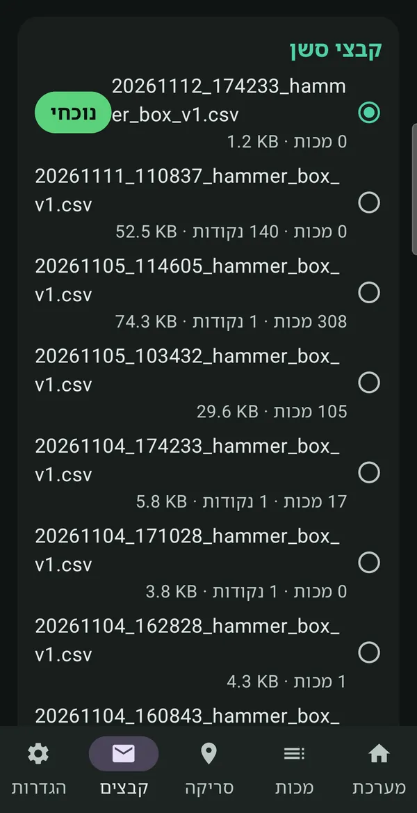
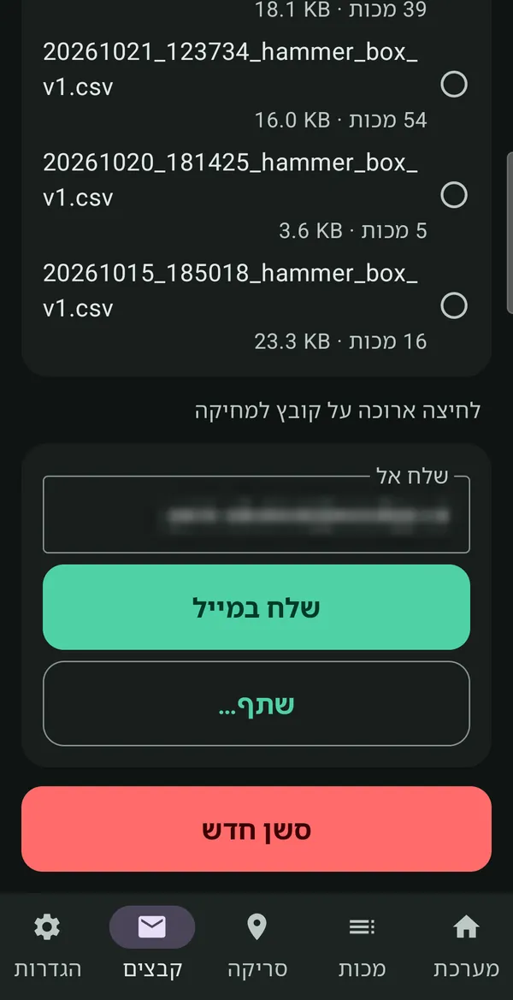
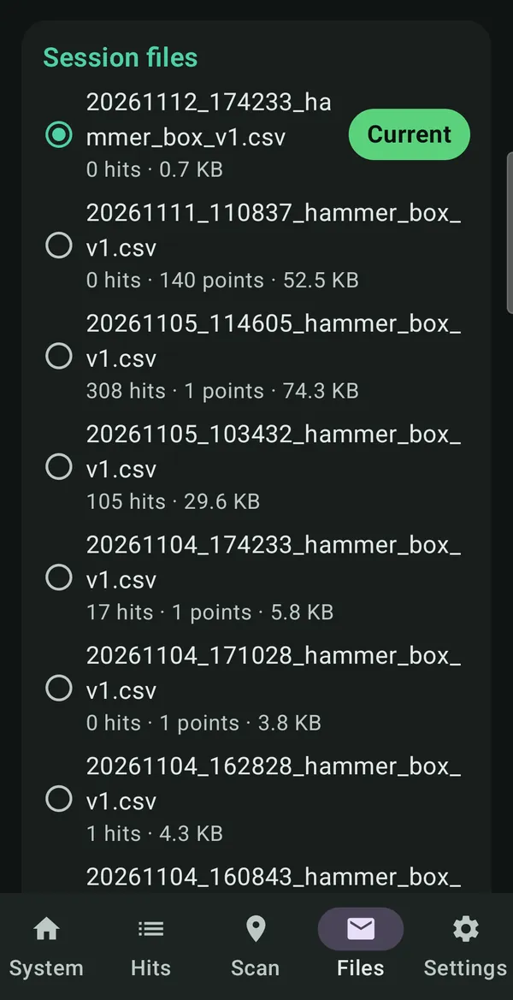
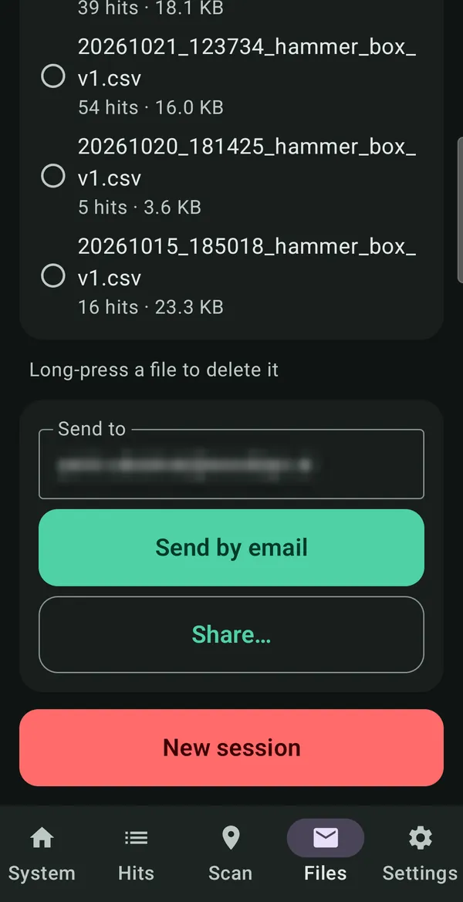
לד החיווי במערכתThe box status LED
| לדLED | משמעותMeaning |
|---|---|
| ירוק קבוע: RTK Fixed. מוכן לעבודה.Steady green: RTK Fixed. Ready to work. | |
| ירוק מהבהב: יש לוויינים, עוד אין RTK Fixed.Blinking green: satellites in view, not RTK Fixed yet. | |
| אין ירוק: אין לוויינים.No green: no satellites. | |
| הבהוב לבן: מכה נלכדה עם זמן תקין.White flash: hit captured with a valid time. | |
| אדום מהבהב מהר (שנייה): מכה בלי זמן תקין. לא נספרת.Fast red blink (1 s): hit without a valid time. It does not count. | |
| אדום קבוע: תקלה במקלט ה-GNSS או במעגל המכה. הפעל מחדש את המערכת; אם נשאר, דווח.Steady red: a fault in the GNSS receiver or the hit circuit. Restart the box; if it stays, report it. | |
| כחול מהבהב: מכשיר מחובר לרשת ה-Wi-Fi של המערכת (האפליקציה עובדת בבלוטות׳ ולא מדליקה אותו).Blinking blue: a device is on the box's Wi-Fi network (the app uses Bluetooth and does not light it). |
יש לד חיווי אחד, והצבעים מתערבבים: ירוק וכחול מהבהבים יחד נראים טורקיז.
It is one LED and the colors mix: green and blue blinking together look cyan.
הודעות ושגיאותMessages and errors
| הודעהMessage | מה לעשותWhat to do |
|---|---|
| התקרב למערכת. האפליקציה מתחברת לבד, ומכות שנעשו בינתיים משוחזרות (עד 100 אחרונות).Move closer to the box. The app reconnects by itself, and hits made meanwhile are recovered (up to the last 100). | |
| חכה שיחזור. בדוק שמיים פתוחים ושה-NTRIP מחובר.Wait for it to return. Check for open sky and that NTRIP is connected. | |
| החלף או טען את סוללת המערכת.Swap or charge the box battery. | |
| פנה מקום בטלפון. הנתונים שמורים בזיכרון עד שאפשר לכתוב.Free up phone storage. The data is kept in memory until it can be written. | |
| המערכת לא מחוברת: מכות לא נלכדותBox not connected: hits are not captured | חכה לחיבור לפני שמכים.Wait for the connection before hitting. |
| מפעיל לכידת מכות…Turning on hit capture… | חכה שנייה. אם נשאר, התנתק והתחבר מחדש.Wait a second. If it stays, disconnect and connect again. |
| … הוא הגיאופון שהסתיים זה עתה… is the geophone you just finished | סרוק את הגיאופון הבא.Scan the next geophone. |
| המיקום לא נשמר: אין קליטת GNSSPosition not saved: no GNSS fix | המכות נשמרות כרגיל. מדוד את הגיאופון שוב בלשונית סריקה כשיש קליטה.The hits are saved as usual. Measure the geophone again in the Scan tab once there is a fix. |
| הבלוטות׳ כבויBluetooth is off | הדלק בלוטות׳.Turn Bluetooth on. |
שגיאות NTRIPNTRIP errors
• משתמש או סיסמה שגויים, נקודת העיגון לא נמצאה: בדוק את הפרטים בהגדרות.
• אין אינטרנט / שרת לא ידוע, אין תשובה מהשרת: בדוק קליטה סלולרית בטלפון.
• השרת דחה את החיבור: ייתכן שהמשתמש מחובר בטלפון אחר. לכל טלפון צריך משתמש משלו.
• הגדרות NTRIP חסרות: מלא שרת, פורט ונקודת עיגון.
• Wrong user or password, Mountpoint not found: check the details in Settings.
• No internet / unknown caster, No reply from the caster: check the phone's mobile data.
• Caster refused the connection: the user may be logged in on another phone. Each phone needs its own user.
• NTRIP settings incomplete: fill the caster, port and mountpoint.
הגדרותSettings
- מדריך למשתמש: פותח את המדריך הזה.
- שפה וערכת נושא (בהיר / כהה).
- עבודה מול גיאופונים: הפעלה, מכות לכל גיאופון (1–9, ברירת מחדל 3), זום מצלמה בסריקה (ברירת מחדל 50%).
- משוב מכה: צליל, סוג צליל, רטט, צלילי חיבור והתראות.
- NTRIP: פרטי שרת התיקונים ומערכת הקואורדינטות שלו (IGD05/12 ברשתות בישראל).
- חשבון Exodigo והעלאה לענן: התחברות (בפרופיל העבודה בלבד), דלי S3 ונתיב.
- מייל ברירת מחדל לשליחת הקבצים.
- User guide: opens this guide.
- Language and theme (light / dark).
- Geophone workflow: on/off, hits per geophone (1–9, default 3), camera zoom when scanning (default 50%).
- Hit feedback: sound, tone, vibration, connection sounds and alerts.
- NTRIP: the corrections caster details and its coordinate frame (IGD05/12 for Israeli networks).
- Exodigo account and cloud upload: sign-in (work profile only), S3 bucket and path.
- Default email for sending the files.
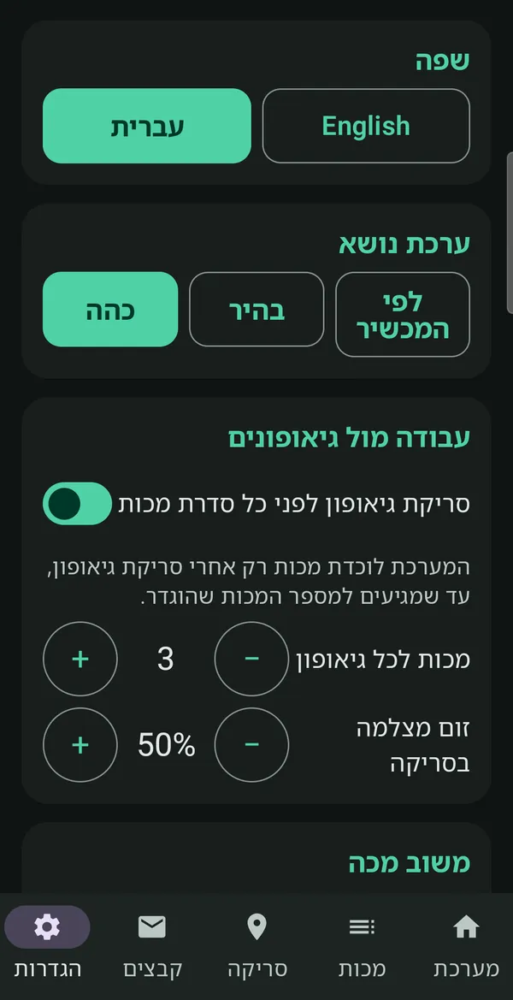
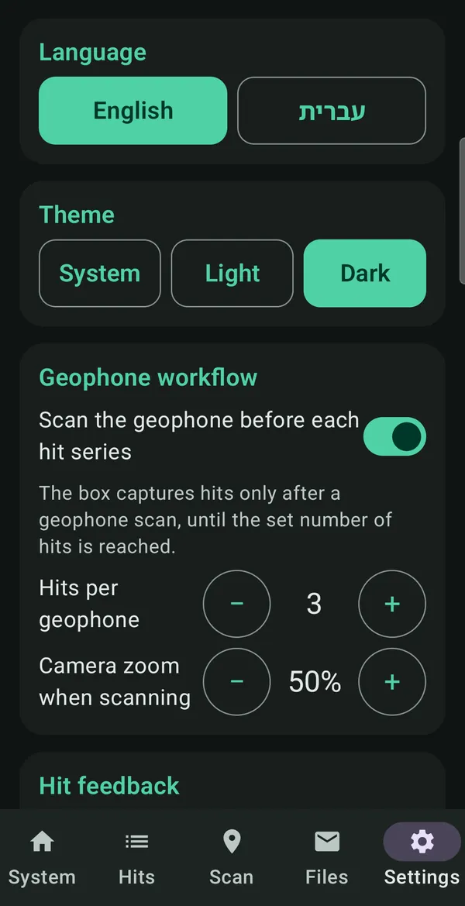